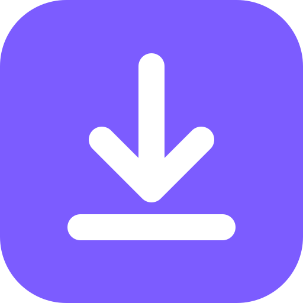

Hudba a video z YouTube, Spotify a SoundCloudu: jednotlivé skladby aj celé playlisty a albumy, ako MP3, M4A, FLAC alebo MP4, s názvom, interpretom, albumom a coverom. Pre Windows, macOS a Linux, zadarmo.
Windows 10 a 11 (64-bit). Rozbaľ ZIP a spusti YTDownloader.exe. yt-dlp aj FFmpeg sú pribalené.
Mac s Apple Silicon (M1 a novší). Rozbaľ ZIP a presuň YTDownloader.app do Aplikácií.
64-bit (x64). Rozbaľ tar.gz a spusti YTDownloader/YTDownloader.
Všetky verzie sú na stránke Releases.
Videá aj playlisty. Audio v najvyššej dostupnej kvalite alebo video MP4.
Skladby, albumy, playlisty. Zoznam, tagy a cover zo Spotify, zvuk z rovnakej skladby na YouTube Music.
Skladby aj sety, s číslom skladby a názvom albumu.
Interpret, album, rok, žáner a obrázok priamo v súbore. Vlastné názvy súborov a triedenie do priečinkov.
Pamätá si, čo už máš. Pri playliste stiahne len nové skladby.
Zapni prístup v appke, naskenuj QR kód a pridávaj skladby z mobilu v tej istej Wi-Fi. Sťahuje počítač.
xattr -dr com.apple.quarantine /Applications/YTDownloader.appbrew install yt-dlp ffmpeg), použije tie.Celé Spotify playlisty nad 100 skladieb: na developer.spotify.com si zadarmo vytvor appku a jej Client ID a Client Secret vlož do Settings → Spotify.